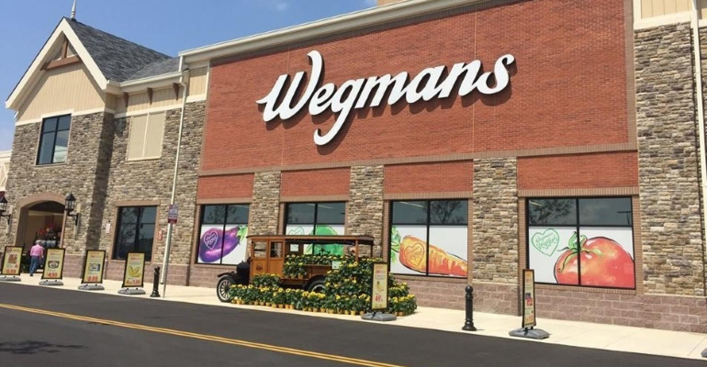
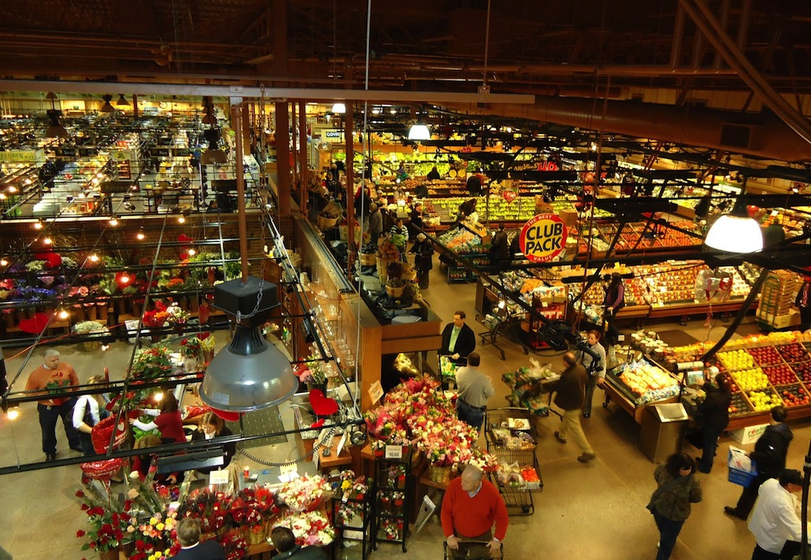

Wegmans
 
Wegmans Food Markets, Inc., is a privately held American supermarket chain; it is headquartered in Gates, New York. As of November 2020, Wegmans has 104 stores in the mid-Atlantic and Northeastern regions.
Number of locations: 104
CEO: Colleen Wegman (2017–)
Headquarters: Rochester, New York, United States
Founded: 1916, Rochester, New York, United States
Revenue: 9.7 billion USD (2019)
Founders: John Wegman, Walter Wegman